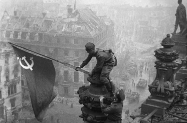

1941 - 1945
Война… Какое страшное слово. Кровавой нитью прошла она по судьбам людей. Безжалостный огонь войны слепо уничтожал и взрослых, и детей. Четыре долгих года стонала от боли земля, гибли мирные жители, в пепел превращались достижения многолетнего труда. Миллионы людей были втянуты в боевые действия, до изнеможения трудились на оборонных предприятиях, не щадили своей жизни и не считали это подвигом. По данным статистики на белорусской земле погиб каждый четвертый. На территории Гродненской области по неполным данным за время оккупации было уничтожено 285 634 жителя, в том числе 10640 детей. Но разве можно цифрами сосчитать страдания и горе тех, кто выжил в этой войне, седые волосы на головах отцов и слезы матерей?
Великая Отечественная война (22 июня 1941 — 9 мая 1945) — война СССР против вторгшихся на его территорию нацистской Германии и ее союзников. Является важнейшей составной частью Второй мировой войны, в ходе которой Красная Армия разгромила вооруженные силы Германии, изгнала их из Советского Союза и освободила оккупированные Третьим рейхом страны Восточной и Центральной Европы. Завершилась война взятием советскими войсками Берлина и безоговорочной капитуляцией Германии.
Первый этап: начальный или оборонительный
После неожиданного вторжения в СССР в результате неудачных для советских войск приграничных сражений 22-30 июня 1941 года фашистам удалось прорваться и захватить приграничные республики: Прибалтику, Беларусь и часть Украины.
До ноября немцы успешно продвигались к Москве. Однако, не смотря на продолжительные военные действия, войти в Москву не удалось.
В ноябре 1942 года контрнаступательная часть Сталинградской операции стала началом нового этапа. Добившись успеха в Сталинградской битве, советская армия закрепила его на ржевско-вяземском выступе, под Курском, на берегах Днепра, в Северном Кавказе. Была прорвана блокада Ленинграда.
Освобождение советскими войсками правобережной Украины стало началом событий, вошедших в историю как “десять сталинских ударов”. В результате успешных наступательных действий Красной Армии в 1945 году территория СССР была полностью освобождена. А 2 мая этого же года после успешного штурма советскими войсками Берлин сдался.